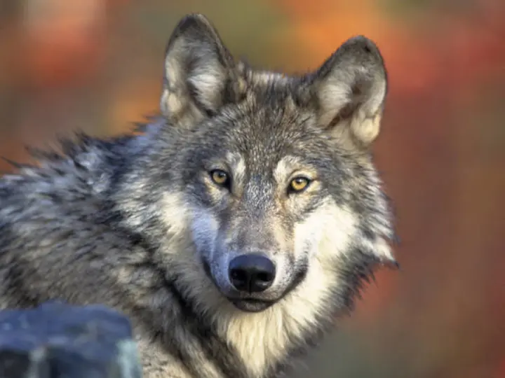
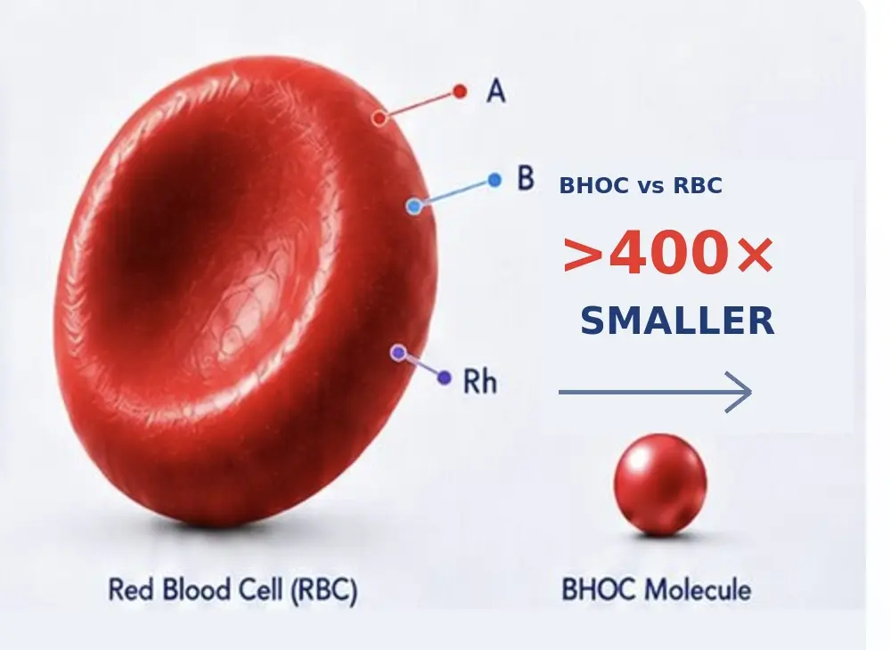

The Science Bridge
Every species is different.
The need for oxygen is universal.
BHOC is developing a next-generation oxygen-delivery platform for veterinary medicine, including companion, wildlife, exotic and endangered species.
Discover the Science

- Designed to reduce dependence on red-cell blood-group matching.
- Target profile includes 3+ year room-temperature shelf life.
Development objectives. Product- and species-specific evidence is required.